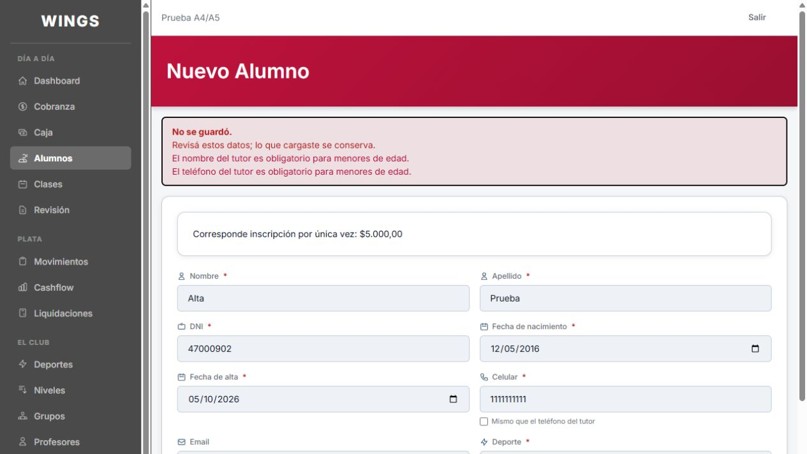
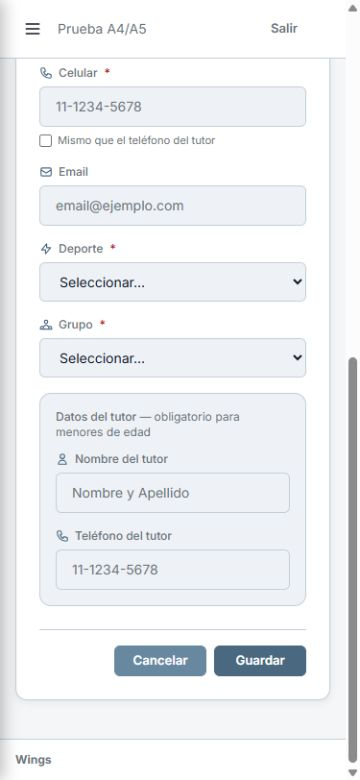
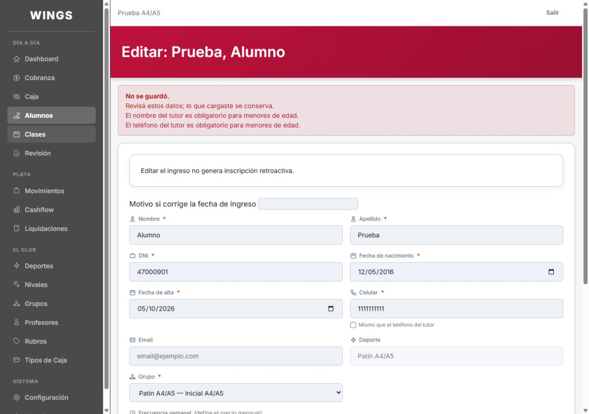
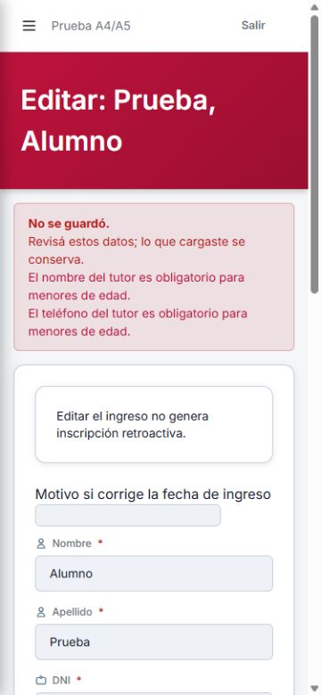
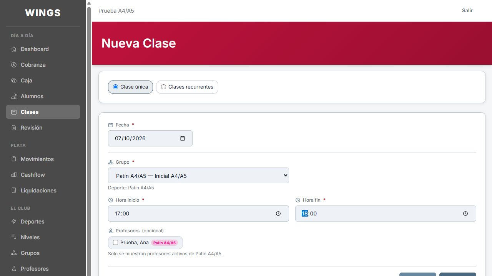
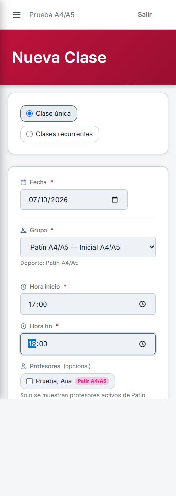
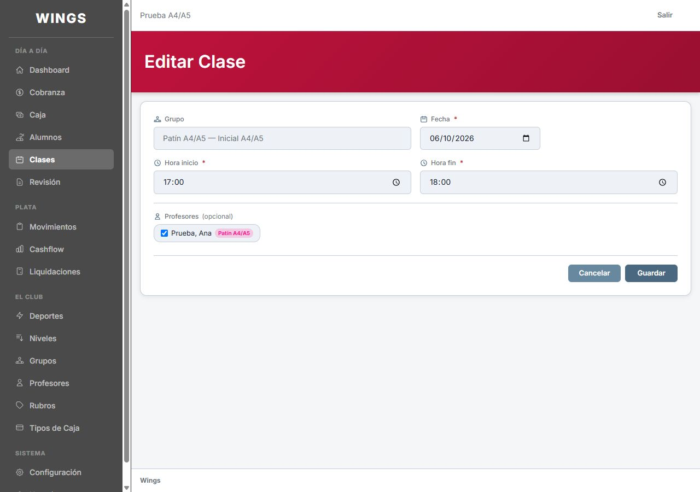
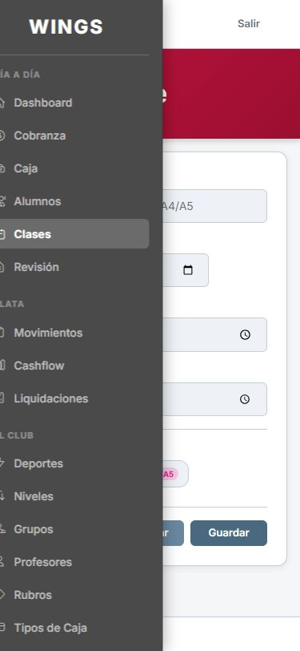
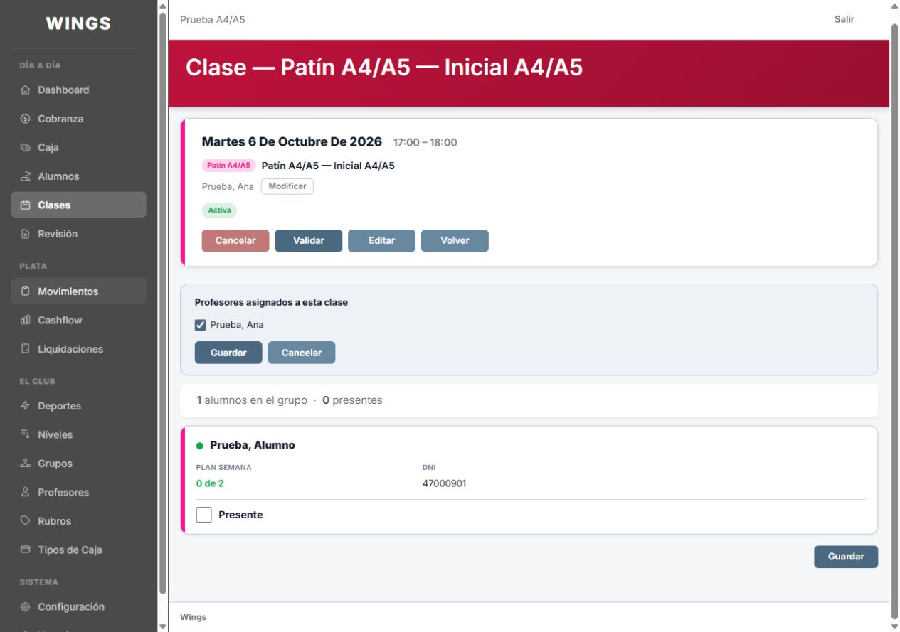
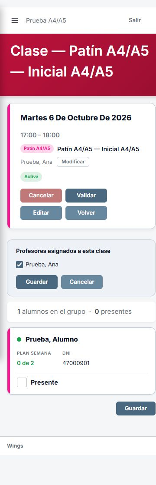

A4 · Retoque del motivo de ingreso · 05/10/2026
Abrir solo las capturas nuevas
Escritorio

375 de ancho

Datos ficticios en wings_testing_codex. Diseño aprobado por Carlos. Hecho (Cx), a revisar por otro agente; sin despliegue.
Retoque A4 posterior a 373f9b4: motivo de fecha de ingreso alineado dentro de la grilla y con ícono de Descripción. Estas dos imágenes son las nuevas; Carlos las aprobó el 05/10 para commit y push. Las capturas originales se conservan más abajo como antecedente.
Abrir solo las capturas nuevas
Nota de revisión: alta de alumno a 375 muestra el formulario previo al envío; edición de clase a 375 quedó con el menú abierto y debe repetirse sin él. El aviso de edición de alumno sí está visible sin superposición.









